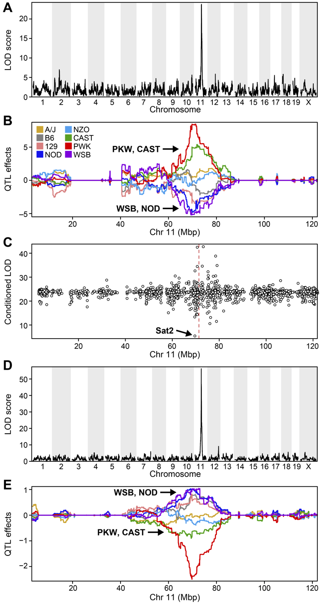

Content from Introduction
Last updated on 2024-12-09 | Edit this page
Estimated time: 15 minutes
Overview
Questions
- What are expression quantitative trait loci (eQTL)?
- How are eQTL used in genetic studies?
Objectives
- Describe how an expression quantitative trait locus (eQTL) impacts gene expression.
- Describe how eQTL are used in genetic studies.
Introduction
Differences in disease risk between individuals are often caused by genetic variants. Identifying the effects of genetic variants is key to understanding disease phenotypes and their underlying biology. The effects of variants in many single-gene disorders, such as cystic fibrosis, are generally well-characterized and their disease biology well understood. For example, in cystic fibrosis, mutations in the coding region of the CFTR gene alter the three-dimensional structure of the chloride channel proteins in epithelial cells, affecting not only chloride transport, but also sodium and potassium transport in the lungs, pancreas and skin. The path from gene mutation to altered protein to disease phenotype is relatively simple and well understood.

Created in BioRender
The most common human disorders, however, involve many genes interacting with each other and with the environment, a far more complicated path to follow than the path from a single gene mutation to its protein to a disease phenotype. Cardiovascular disease, Alzheimer’s disease, arthritis, diabetes and cancer involve a complex interplay of genes with environment, and their mechanisms are not well understood. One method of understanding the relationship between genetic variants and disease is a genome-wide association study (GWAS), which associates genetic variants with disease traits. It is tempting to think that these genetic variants would fall in coding regions. However, most GWAS variants for common diseases like diabetes are located in non-coding regions of the genome. These variants are therefore likely to fall in regulatory sequences which are involved in gene regulation.
 Excerpted from the GWAS Catalog
Excerpted from the GWAS Catalog
Gene regulation controls the quantity, timing and locale of gene expression. Analyzing the association between gene expression and genetic variants is known as expression quantitative trait locus (eQTL) mapping.
 Created
in BioRender
Created
in BioRender
eQTL mapping searches for associations between the expression of one or more genes and a genetic locus. Specifically, genetic variants underlying eQTL peaks explain some of the variation in gene expression levels. eQTL studies can reveal the architecture of quantitative traits, connect DNA sequence variation to phenotypic variation, and shed light on transcriptional regulation and regulatory variation. Traditional analytic techniques like linkage and association mapping can be applied to thousands of gene expression traits (transcripts) in eQTL analysis, such that gene expression can be mapped in much the same way as a physiological phenotype like blood pressure or heart rate. Joining gene expression and physiological phenotypes with genetic variation can identify genes with variants affecting disease phenotypes.
To the simple diagram above we’ll add two more details. Non-coding SNPs can regulate gene expression from nearby locations on the same chromosome:
 Created in BioRender
Created in BioRender
SNPs that affect gene expression from afar, often from a different chromosome from the gene that they regulate are called distal regulators.

Created in BioRender
Key Points
- An expression quantitative trait locus (eQTL) explains part of the variation in gene expression.
- Traditional linkage and association mapping can be applied to gene expression traits (transcripts).
- Genetic variants, such as single nucleotide polymorphisms (SNPs), that underlie eQTL illuminate transcriptional regulation and variation.
Content from Genetic Drivers of Pancreatic Islet Function
Last updated on 2024-12-09 | Edit this page
Estimated time: 15 minutes
Overview
Questions
- What is the hypothesis of an example eQTL study?
Objectives
- Describe an example eQTL study in Diversity Outbred mice.
- State the hypothesis from an example eQTL study in Diversity Outbred mice.
Genome-wide association studies (GWAS) often identify variants in non-coding regions of the genome, indicating that regulation of gene expression predominates in common diseases like type II diabetes. In type II diabetes (T2D) the pancreas produces less insulin and the body becomes less responsive to insulin.
 Created in BioRender
Created in BioRender
Most of the more than 100 genetic loci associated with T2D affect the function of pancreatic islets. This study offers supporting evidence for T2D-associated loci in human GWAS, most of which affect pancreatic islet function. Pancreatic islet cells produce endocrine hormones including insulin. A feedback loop of glucose and insulin activates beta cells that produce insulin and inhibits alpha cells in the pancreas.
 Created in BioRender
Created in BioRender
Susceptibility to type II diabetes (T2D) increases with obesity, such that T2D-associated genetic loci operate mainly under conditions of obesity (See Keller, Mark P et al. “Genetic Drivers of Pancreatic Islet Function.” Genetics vol. 209,1 (2018): 335-356). Like most GWAS loci, the T2D-associated genetic loci identified from GWAS have very small effect sizes and odds ratios just slightly more than 1.
This study explored islet gene expression in diabetes. The authors hypothesized that gene expression changes in response to dietary challenge would reveal signaling pathways involved in stress responses. The expression of many genes often map to the same locus, indicating that expression of these genes is controlled in common. If their mRNAs encode proteins with common physiological functions, the function of the controlling gene(s) is revealed. Variation in expression of the controlling gene(s), rather than a genetic variant, can be tested as an immediate cause of a disease-related phenotype.
In this study, Diversity Outbred (DO) mice were fed a high-fat, high-sugar diet as a stressor, sensitizing the mice to develop diabetic traits. Body weight and plasma glucose, insulin, and triglyceride measurements were taken biweekly. Food intake could be measured since animals were individually housed. A glucose tolerance test at 18 weeks of age provided measurement of dynamic glucose and insulin changes at 5, 15, 30, 60 and 120 minutes after glucose administration. Area under the curve (AUC) was determined from these time points for both plasma glucose and insulin levels.

In the figure above, time is plotted on the X-axis and glucose or insulin levels are plotted on the Y-axis. Blood is taken at the beginning of the test and at several time points after the glucose bolus. The glucose or insulin AUC is the area under the measured points down to the baseline level. A diversity of responses to the glucose tolerance test is illustrated below.
Homeostatic model assessment (HOMA) quantifies insulin resistance (IR) and beta cell (\(\beta\)) function. For IR, the equation quantifying insulin resistance is the product of glucose and insulin in mg/dL divided by 405.
\(HOMA-IR = (glucose \times insulin) / 405\)
For beta cell function, the equation is
\(HOMA-\beta = (360 \times insulin) / (glucose - 63)\)
expressed as a percentage. Insulin resistance and beta cell function were determined after the glucose tolerance test was given. Islet cells were isolated from pancreas, and RNA extracted and libraries constructed from isolated RNA for gene expression measurements.
Genome scans were performed with the leave-one-chromosome-out (LOCO) method for kinship correction. Sex and experimental cohort (DO wave) were used as covariates. The results of one scan for insulin area under the curve (AUC) is shown below with a strong peak on chromosome 11. In this lesson, we will look into genes located under this peak.
Key Points
- Many GWAS studies identify SNPs which to no lie within coding regions of the genome.
- This implies that the SNPs lie within regulatory sequences which affect gene expression levels.
- Merging gene expression with physiological trait QTL mapping can help to identify genes which affect physiological trait variation.
Content from Load and Explore Data
Last updated on 2024-12-09 | Edit this page
Estimated time: 45 minutes
Overview
Questions
- What data are required for eqtl mapping?
Objectives
- To provide an example and exploration of data used for eqtl mapping.
R
library(knitr)
library(ggbeeswarm)
library(tidyverse)
library(qtl2)
library(DESeq2)
Physiological Phenotypes
You should have downloaded data files already when following the setup instructions. The complete data used in these analyses are available from Data Dryad. The files we will use are in a simpler format than those on Data Dryad.
Load in the physiological phenotypes.
R
# load the data
pheno <- readRDS(file = 'data/attie_do_pheno.rds')
pheno_dict <- readRDS(file = 'data/attie_do_pheno_dict.rds')
covar <- readRDS(file = 'data/attie_do_covar.rds')
Physiological Phenotypes
In this data set, we have 20 phenotypes for 500 Diversity Outbred
mice. pheno is a data frame containing the phenotype data
as well as covariates. Click on the triangle to the left of
pheno in the Environment pane to view its contents. Run
names(pheno) to list the variables.
pheno_dict is the phenotype dictionary. This data frame
contains information on each variable in pheno, including
name, short name,
pheno_type,formula (if used) and description. You can
view a table of the data dictionary.
R
pheno_dict |>
select(description, formula) |>
kable()
| description | formula | |
|---|---|---|
| mouse | Animal identifier. | NA |
| sex | Male (M) or female (F). | NA |
| sac_date | Date when mouse was sacrificed; used to compute days on diet, using birth dates. | NA |
| partial_inflation | Some mice showed a partial pancreatic inflation which would negatively effect the total number of islets collected from these mice. | NA |
| coat_color | Visual inspection by Kathy Schuler on coat color. | NA |
| oGTT_date | Date the oGTT was performed. | NA |
| FAD_NAD_paired | A change in the method that was used to make this measurement by Matt Merrins’ lab. Paired was the same islet for the value at 3.3mM vs. 8.3mM glucose; unpaired was where averages were used for each glucose concentration and used to compute ratio. | NA |
| FAD_NAD_filter_set | A different filter set was used on the microscope to make the fluorescent measurement; may have influenced the values. | NA |
| crumblers | Some mice store food in their bedding (hoarders) which would be incorrectly interpreted as consumed. | NA |
| birthdate | Birth date | NA |
| diet_days | Number of days. | NA |
| num_islets | Total number of islets harvested per mouse; negatively impacted by those with partial inflation. | NA |
| Ins_per_islet | Amount of insulin per islet in units of ng/ml/islet. | NA |
| WPIC | Derived number; equal to total number of islets times insulin content per islet. | Ins_per_islet * num_islets |
| HOMA_IR_0min | glucose*insulin/405 at time t=0 for the oGTT | Glu_0min * Ins_0min / 405 |
| HOMA_B_0min | 360 * Insulin / (Glucose - 63) at time t=0 for the oGTT | 360 * Ins_0min / (Glu_0min - 63) |
| Glu_tAUC | Area under the curve (AUC) calculation without any correction for baseline differences. | complicated |
| Ins_tAUC | Area under the curve (AUC) calculation without any correction for baseline differences. | complicated |
| Glu_6wk | Plasma glucose with units of mg/dl; fasting. | NA |
| Ins_6wk | Plasma insulin with units of ng/ml; fasting. | NA |
| TG_6wk | Plasma triglyceride (TG) with units of mg/dl; fasting. | NA |
| Glu_10wk | Plasma glucose with units of mg/dl; fasting. | NA |
| Ins_10wk | Plasma insulin with units of ng/ml; fasting. | NA |
| TG_10wk | Plasma triglyceride (TG) with units of mg/dl; fasting. | NA |
| Glu_14wk | Plasma glucose with units of mg/dl; fasting. | NA |
| Ins_14wk | Plasma insulin with units of ng/ml; fasting. | NA |
| TG_14wk | Plasma triglyceride (TG) with units of mg/dl; fasting. | NA |
| food_ave | Average food consumption over the measurements made for each mouse. | complicated |
| weight_2wk | Body weight at indicated date; units are gm. | NA |
| weight_6wk | Body weight at indicated date; units are gm. | NA |
| weight_10wk | Body weight at indicated date; units are gm. | NA |
| DOwave | Wave (i.e., batch) of DO mice | NA |
Since the paper is interested in type 2 diabetes and insulin secretion, we will choose insulin AUC (area under the curve which was calculated without any correction for baseline differences) for this review.
Phenotype Distributions
Many statistical models, including the QTL mapping model in
qtl2, expect that the incoming data will be normally
distributed. You may use transformations such as log or square root to
make your data more normally distributed. Here, we will log transform
the data.
Let’s make a variable for insulin AUC so that we don’t have to type as much.
R
ins_tauc <- pheno[, 'Ins_tAUC', drop = FALSE]
Next, let’s look at the distribution of insulin AUC using a histogram.
R
hist(ins_tauc[,1],
breaks = 20,
main = "Insulin Area Under the Curve")
This is clearly not normally distributed. In fact, this type of distribution is often log normal.
Now, let’s apply the log() function to this data in an
effort to make the distribution more normal. By default the
log() function calculates the natural log (base
e).
R
ins_tauc$Ins_tAUC_log <- log(ins_tauc$Ins_tAUC)
Let’s make a histogram of the log-transformed data.
R
hist(ins_tauc$Ins_tAUC_log,
breaks = 20,
main = "insulin AUC (log-transformed)")
This looks much better! The data has a somewhat Gaussian shape. Technically, the assumptions of a linear model require that the residuals be normally distributed. In practice, transforming the input data to be normally distributed helps to make the residuals normally distributed. As a reminder, a residual is the vertical distance from a data point to the line described by a linear model.

Boxplots are another great way to view the distribution of the data
and to identify any outliers. We will log-transform insulin AUC using
the scale_y_log10()
function. This transforms the data using base 10 and creates a base 10
y-axis for plotting. We have overlaid the data points using
ggbeeswarm’s geom_beeswarm.
We have told geom_beeswarm() to plot the points with some
transparency using the argument alpha = 0.2. The
alpha argument ranges between 0 (completely transparent) to
1 (completely opaque). A value of 0.1 means mostly transparent.
R
# plot Insulin on a log 10 scale
ggplot(pheno, aes(sex, Ins_tAUC)) +
geom_boxplot() +
geom_beeswarm(alpha = 0.2) +
scale_y_log10() +
labs(title = "Insulin area under the curve", y = "insulin AUC") +
theme(text = element_text(size = 20))

Challenge 1
How many orders of magnitude (powers of 10) does insulin AUC span?
insulin AUC spans three orders of magnitude, from near 10 to over 1000.
Challenge 2
Which sex has higher median insulin AUC values?
Males have higher insulin AUC than females.
Challenge 3
What does the heavy line bisecting the boxes indicate?
What do the lines at the top and bottom of the boxes indicate?
What does the whisker extending from the top and bottom of the
boxes indicate?
What do the black dots extending from the whiskers indicate?
The heavy line bisecting the boxes shows the median value (not the
mean!). Half of the data points are above and half are below this
line.
The lines at the top and bottom of the boxes indicate the first and 3rd
quartiles of the data (the hinges). One-fourth of the data
points are beneath the box and another one-fourth are above the box. The
box itself contains 50% of the data points.
The whiskers represent some multiple of the interquartile range (IQR),
which is the height of the box between the first and third quartiles.
geom_boxplot() produces Tukey-style boxplots in
which the whiskers are 1.5 \(\times\)
the IQR. Any data points that lie beyond the whiskers are considered
outliers and are shown as heavy black dots.
The boxplot is a useful plot to visualize the distribution of your data.
Quality Control of Data
Many statistical tests rely upon the data having a normal (or Gaussian) distribution. Many biological phenotypes do not follow this distribution and must be transformed before analysis. This is why we log-transformed the data in the plots above.
While we can “eyeball” the distributions in the boxplot, it would be better to use a quantile-quantile plot.
R
pheno |>
ggplot(aes(sample = Ins_tAUC)) +
stat_qq() +
geom_qq_line() +
facet_wrap(~sex) +
labs(title = "Quantile-Quantile Plot of Ins_tAUC",
x = "Normal Quantiles",
y = "Ins_tAUC") +
theme(text = element_text(size = 20))

In these plots, the quantiles of the normal distribution are plotted on the X-axis and the data are plotted on the Y-axis. A quantile evenly divides data observations into a specific number of groups. The boxplot above evenly divides the observations into quartiles, a quantile containing four groups that each contain one-fourth of the data. A percentile similarly divides data into 100 quantiles, with each percentile containing 1% of the observations.
In a quantile-quantile (Q-Q) plot the straight line indicates the quantiles a normal distribution would follow. The untransformed insulin AUC data values do not follow a normal distribution because the points are far from the line. If they were reasonably normally distributed, most of the data points would fall directly on the straight line.
Next, we will log-transform the data and then create a quantile-quantile plot.
R
pheno |>
mutate(Ins_tAUC = log(Ins_tAUC)) |>
ggplot(aes(sample = Ins_tAUC)) +
stat_qq() +
geom_qq_line() +
facet_wrap(~sex) +
labs(title = "Quantile-Quantile Plot of log(Ins_tAUC)",
x = "Normal Quantiles",
y = "log(Ins_tAUC)") +
theme(text = element_text(size = 20))

Challenge 4
Does the log transformation make the data more normally distributed? Explain your answer.
Yes. The log transformation makes the data more normally distributed because the data points follow the normality line more closely.
Challenge 5
Do any data points look suspicious to you? Explain your answer.
The data points that deviate from the normality line would be worth investigating. All data deviates somewhat from normality, but the three lowest points in the male data plot would be worth investigating. They may be real, but there may also have been mishap in the assay.
Another way to identify outliers is to standardize the data and look for data points that are more than four standard deviations from the mean.
To do this, we will log transform and standardize insulin AUC.
R
ins_tauc = pheno |>
select(mouse, sex, Ins_tAUC) |>
group_by(sex) |>
mutate(Ins_tAUC = log(Ins_tAUC),
Ins_tAUC = scale(Ins_tAUC))
ins_tauc |>
ggplot(aes(x = sex, y = Ins_tAUC)) +
geom_boxplot() +
geom_beeswarm(alpha = 0.2) +
geom_hline(aes(yintercept = -4), color = 'red') +
geom_hline(aes(yintercept = 4), color = 'red') +
labs(title = "Distribution of Standardized Ins_tAUC") +
theme(text = element_text(size = 20))

There are no data points outside of the four standard deviation limits.
Gene Expression Data
Let’s read in the gene expression data.
R
annot <- readRDS(file = 'data/attie_do_expr_annot.rds')
raw <- readRDS(file = 'data/attie_do_expr_raw.rds')
We have loaded in two data objects:
-
annot: a data frame containing gene annotation, and -
raw: a numeric matrix containing the un-normalized expression counts.
Challenge 6: How many samples and genes are there?
Use the dim command or the Environment tab to determine
the number of samples and genes in raw.
R
dim(raw)
OUTPUT
[1] 378 21771There are 378 samples and 21,771 genes.
The expression objects that we have loaded in are organized such that the transcripts and samples are aligned between the objects. The figure below may help you to visualize the relationship between the expression, annotation, and covariates.

Let’s look at the rows in the gene annotation object.
R
head(annot)
OUTPUT
gene_id symbol chr start end strand
ENSMUSG00000000001 ENSMUSG00000000001 Gnai3 3 108.10728 108.14615 -1
ENSMUSG00000000028 ENSMUSG00000000028 Cdc45 16 18.78045 18.81199 -1
ENSMUSG00000000037 ENSMUSG00000000037 Scml2 X 161.11719 161.25821 1
ENSMUSG00000000049 ENSMUSG00000000049 Apoh 11 108.34335 108.41440 1
ENSMUSG00000000056 ENSMUSG00000000056 Narf 11 121.23725 121.25586 1
ENSMUSG00000000058 ENSMUSG00000000058 Cav2 6 17.28119 17.28911 1
middle nearest.marker.id biotype module
ENSMUSG00000000001 108.12671 3_108090236 protein_coding darkgreen
ENSMUSG00000000028 18.79622 16_18817262 protein_coding grey
ENSMUSG00000000037 161.18770 X_161182677 protein_coding grey
ENSMUSG00000000049 108.37887 11_108369225 protein_coding greenyellow
ENSMUSG00000000056 121.24655 11_121200487 protein_coding brown
ENSMUSG00000000058 17.28515 6_17288298 protein_coding brown
hotspot
ENSMUSG00000000001 <NA>
ENSMUSG00000000028 <NA>
ENSMUSG00000000037 <NA>
ENSMUSG00000000049 <NA>
ENSMUSG00000000056 <NA>
ENSMUSG00000000058 <NA>There are many columns in the gene annotation file, including the Ensembl ID, gene symbol, chromosome, start and end of the gene.
Next, let’s look at the sample covariates.
R
head(covar)
OUTPUT
mouse sex DOwave diet_days
DO021 DO021 F 1 112
DO022 DO022 F 1 112
DO023 DO023 F 1 112
DO024 DO024 F 1 112
DO025 DO025 F 1 114
DO026 DO026 F 1 114The sample covariates have information about the sex and DO
generation, indicated as DOwave, of each mouse. These are
metadata, or data about the data.
In order to make reasonable gene comparisons between samples, the count data needs to be normalized. In the quantile-quantile (Q-Q) plot below, count data for the first gene are plotted over a diagonal line tracing a normal distribution for those counts. Notice that most of the count data values lie off of this line, indicating that these gene counts are not normally distributed.
Q-Q plots for the first six genes show that count data for these genes are not normally distributed. They are also not on the same scale. The y-axis values for each subplot range to 20,000 counts in the first subplot, 250 in the second, 90 in the third, and so on.
R
raw |>
as.data.frame() |>
select(ENSMUSG00000000001:ENSMUSG00000000058) |>
pivot_longer(cols = everything(), names_to = 'gene', values_to = 'value') |>
ggplot(aes(sample = value)) +
stat_qq() +
geom_qq_line() +
facet_wrap(~gene, scales = 'free') +
labs(title = 'Count distribution for six genes',
xlab = 'Normal percentiles', y = 'Count percentiles') +
theme(text = element_text(size = 20))
Since each gene has a different distribution, we will need to normalize the gene expression data. We will do this in a future lesson.
Key Points
- It is important to inspect the phenotype distributions and to transform them to be nearly normal.
Content from Mapping A Single Gene Expression Trait
Last updated on 2024-12-09 | Edit this page
Estimated time: 60 minutes
Overview
Questions
- What are the steps in QTL mapping?
- How do I map one gene expression trait?
Objectives
- Review the steps in QTL mapping.
- Run a QTL analysis for expression data.
Expression Data
In this lesson we review mapping steps and apply those steps to a gene expression trait. In a previous lesson, we loaded in the raw transcript expression data and noticed that the distribution of each gene was non-Gaussian and different.
There is another issue that we must also address. Each sample has a different total number of counts. This affects our ability to compare values between samples. For example, say that we look at the expression of Gene1 in two samples and find that both samples have 500 counts for Gene1. It appears that Gene1 is equally expressed in both samples. However, suppose that the total counts (i.e. the sum of counts for all genes in each sample) is 10 million for sample 1 and 20 million for sample 2. The sum of all counts across all genes in a sample is also called the library size. Then we need to scale the counts for Gene1 by the total counts. This is shown in the table below.
| Sample | Gene1 Counts | Total Counts | Proportion |
|---|---|---|---|
| 1 | 500 | 10e6 | 5e-05 |
| 2 | 500 | 20e6 | 2.5e-05 |
In this case, we can see that Gene1 has lower expression in sample 2 compared to sample 1. Although the actual adjustment for library size (i.e. total counts) is more complicated, this is the rationale for adjusting each sample.
Let’s plot a histogram of the total counts in each sample.
R
hist(rowSums(raw) * 1e-6,
breaks = 50,
main = "Histogram of Total Counts per Sample (raw counts)",
xlab = "Total Counts (Millions)")

As you can see, total counts range from 15 to 50 million reads. The distribution of counts seems to be bimodal as well, which is troubling.
Perhaps we should plot total counts versus the batch information that we have in the covariates. Recall that there are 500 mice in the covariate data. The mouse IDs are in the rownames of the raw expression data, but not all 500 mice have expression data.
R
sum(covar$mouse %in% rownames(raw))
OUTPUT
[1] 378Let’s subset the covariates to include only those with expression data.
R
expr_covar <- subset(covar, mouse %in% rownames(raw))
expr_covar <- expr_covar[match(rownames(raw), expr_covar$mouse),]
expr_covar$DOwave <- factor(expr_covar$DOwave)
To recap, before we perform any analysis using the transcript expression data, we need to:
- normalize it by adjusting for library size and,
- transform the expression of each gene to be Gaussian.
Normalizing Gene Expression
We will use the DESeq2 package to adjust the counts for library size. DESeq2 is a large package which performs many types of analyses. Further details are in the DESeq2 Tutorial.
First, we must create a DESeq object. We need the raw counts, rounded so that all values are integers, and the sample covariate data. We will have to subset the sample covariates to include only the expression samples, since we don’t have expression data for every mouse.
In order to create the DESeq2 object, we will need to transpose
(using t()) the expression data so that the mouse IDs
(samples) are moved to the columns. This is because DESeq2 requires that
the samples be in columns and the genes in rows. We will also tell
DESeq2 what the design variables are for our data, although they are not
used in this case. These would be used if we were searching for
differentially expressed genes. We specify no design with
design = ~ 1.
R
dds = DESeqDataSetFromMatrix(countData = t(round(raw)),
colData = expr_covar,
design = ~ 1)
OUTPUT
converting counts to integer modeThe object dds contains the counts for all mice that
have expression data. Genes are in rows and samples are in columns.
R
dds
OUTPUT
class: DESeqDataSet
dim: 21771 378
metadata(1): version
assays(1): counts
rownames(21771): ENSMUSG00000000001 ENSMUSG00000000028 ...
ENSMUSG00000099322 ENSMUSG00000099329
rowData names(0):
colnames(378): DO021 DO022 ... DO417 DO420
colData names(4): mouse sex DOwave diet_daysR
dim(dds)
OUTPUT
[1] 21771 378This is a complex data object. Let’s look at the counts for the first gene in the first 5 samples.
R
dds@assays@data$counts[1, 1:5]
OUTPUT
DO021 DO022 DO023 DO024 DO025
10247 11838 12591 12424 10906 Now look at the counts for the first five genes in sample 1.
R
dds@assays@data$counts[1:5, 1]
OUTPUT
ENSMUSG00000000001 ENSMUSG00000000028 ENSMUSG00000000037 ENSMUSG00000000049
10247 108 29 15
ENSMUSG00000000056
120 Next, we will run DESeq2 and let it adjust the expression data for differing library sizes.
R
dds = DESeq(dds)
OUTPUT
estimating size factorsOUTPUT
estimating dispersionsOUTPUT
gene-wise dispersion estimatesOUTPUT
mean-dispersion relationshipOUTPUT
final dispersion estimatesOUTPUT
fitting model and testingOUTPUT
-- replacing outliers and refitting for 155 genes
-- DESeq argument 'minReplicatesForReplace' = 7
-- original counts are preserved in counts(dds)OUTPUT
estimating dispersionsOUTPUT
fitting model and testingOnce this is done, we will get the expression data after it has been transformed using the Variance Stabilizing Transformation (VST). The VST adjusts the variance of the genes such that it is not related to the mean gene expression level.
The students don’t have to type the next block. You can show the plot in the lesson or type it to show the plot live.
First, let’s look at the mean expression of each gene versus its standard deviation.
R
tibble(mean = colMeans(raw),
sd = apply(raw, 2, sd)) |>
ggplot(aes(mean, sd)) +
geom_point() +
scale_x_log10() +
scale_y_log10() +
labs(title = "Mean vs SD of expression values",
x = "log(Mean)", y = "log(Std. Dev.)") +
theme(text = element_text(size = 20))

The plot above shows the mean expression value for each gene versus the standard deviation of each gene. Both axes are log-transformed. As you can see, there is a positive correlation between the mean and the standard deviation. We would like each gene to have the same variance, regardless of the mean, for each gene.
Next, we will apply the variance stabilizing transformation and will transpose the expression values.
R
expr = assays(vst(dds))[[1]]
expr = t(expr)
Let’s look at the mean versus the standard deviation of each gene after normalization.
R
tibble(mean = colMeans(expr),
sd = apply(expr, 2, sd)) |>
ggplot(aes(mean, sd)) +
geom_point() +
scale_x_log10() +
scale_y_log10() +
labs(title = "Mean vs. Std. Dev. of After VST",
x = "log(Mean)", y = "log(Std. Dev.)") +
theme(text = element_text(size = 20))

The standard deviation is now largely unrelated to the mean. At lower expression levels, the standard deviation is somewhat related to the mean.
Let’s look at a the distribution of total counts per sample after normalization.
R
hist(rowSums(expr) * 1e-6,
breaks = 50,
main = "Histogram of Total Expression per Sample (after Normalizaion)",
xlab = "Total Counts (Millions)")

At this point, while each gene has been normalized, each gene has a different distribution. In QTL mapping, we often use permutations to estimate significance thresholds. This approach works for one phenotype. However, if other phenotypes have different distributions, then the significance threshold for one phenotype cannot be used for another. This means that we would have to perform 1,000 permutations for each gene. While modern computing clusters can do this, it is time consuming.
Another approach is to force the distribution of each gene to be identical. Then, we can perform permutations on one gene and get a significance threshold for all genes.
We can force the distribution of each gene to be Gaussian and identical for all genes using an inverse-normal or rank-Z transformation.
R
rankZ = function(x) {
x = rank(x,
na.last = "keep",
ties.method = "average") / (sum(!is.na(x)) + 1)
return(qnorm(x))
} # rankZ()
expr_rz = apply(expr, 2, rankZ)
Boxplots of raw counts for six example genes are shown at left below. Notice that the median count values (horizontal black bar in each boxplot) are not comparable between the genes because the counts are not on the same scale. At right, boxplots for the same genes show normalized count data on the same scale.
Show this in the lesson website. Don’t type all of this out or have the students type it either.
R
tmp = raw |>
as.data.frame() |>
select(ENSMUSG00000000001:ENSMUSG00000000058) |>
pivot_longer(cols = everything(),
names_to = 'gene',
values_to = 'value') |>
mutate(type = 'raw')
norm = expr |>
as.data.frame() |>
select(ENSMUSG00000000001:ENSMUSG00000000058) |>
pivot_longer(cols = everything(),
names_to = 'gene',
values_to = 'value') |>
mutate(type = 'normalized')
bind_rows(tmp, norm) |>
mutate(type = factor(type, levels = c('raw', 'normalized'))) |>
ggplot(aes(gene, value)) +
geom_boxplot() +
facet_wrap(~type, scales = 'free') +
labs(title = 'Count distributions for example genes') +
theme(text = element_text(size = 20),
axis.text.x = element_text(angle = 90, hjust = 0.5, vjust = 1))

R
rm(tmp, norm)
In the rankZ-transformed data, every gene has the same distribution.
Show this in the lesson website. Don’t type all of this out or have the students type it either.
R
expr_rz |>
as.data.frame() |>
select(ENSMUSG00000000001:ENSMUSG00000000058) |>
pivot_longer(cols = everything(),
names_to = 'gene',
values_to = 'value') |>
ggplot(aes(gene, value)) +
geom_boxplot() +
labs(title = 'RankZ distributions for example genes') +
theme(text = element_text(size = 20),
axis.text.x = element_text(angle = 90, hjust = 0.5, vjust = 1))

Let’s save the rankZ-transformed expression data so that we will have it when we need it again.
R
saveRDS(expr_rz, file = "data/attie_do_expr_rz.rds")
Before moving on, let’s remove data objects that we won’t be using again.
R
rm(dds, raw, expr)
The Marker Map
The marker map contains a list of the genetic marker positions for each marker in the genoprobs. Let’s read it in now.
R
map <- readRDS(file = 'data/attie_do_map.rds')
The marker map for each chromosome is stored in the map
object. This is used to plot the LOD scores calculated at each marker
during QTL mapping. Each list element is a numeric vector with each
marker position in megabases (Mb). Here we are using the 69K grid marker
file. Often when there are numerous genotype arrays used in a study, we
interpolate all to a 69k grid file so we are able to combine all samples
across different array types.
Look at the structure of map in the Environment tab by
clicking the triangle to the left or by running str(map) in
the Console.
Each element in map contains a list of marker positions and names.
R
head(map[[1]])
OUTPUT
1_3e+06 1_3041392 1_3346528 1_3651663 1_3657931 1_3664199
3.000000 3.041392 3.346528 3.651663 3.657931 3.664199 The names of the markers consist of the chromosome and the bp position, separated by an underscore (_).
Callout
The marker positions in the map must be in Mb.
Genotype probabilities
Previously, we loaded in the physiological phenotypes, the sample covariates, and the transcript expression data and annotation. We also normalized and rankZ transformed the expression data.
In order to perform QTL mapping, we also need the genotype probabilities (i.e genoprobs). In this lesson, we have already processed the genotypes and produced the genoprobs using calc_genoprob.
R
probs <- readRDS("data/attie_DO500_genoprobs_v5.rds")
At this point, you should have several data objects in your environment. Look at the Environment tab to see what data objects are in your environment. It should look like the figure below.
 Each element of
Each element of
probs is a 3-dimensional array containing the founder
allele dosages for each sample at each marker on one chromosome. These
are the 8 state allele probabilities (not 32) using the 69k marker grid
for the same 500 DO mice that also have clinical phenotypes. We have
already calculated genotype probabilities for you, so you can skip the
step for calculating
genotype probabilities and the optional step for calculating allele
probabilities.
Next, we look at the dimensions of probs for chromosome
1:
R
dim(probs[[1]])
OUTPUT
[1] 500 8 4711Each list element of the genoprobs has 500 samples, eight founders, and a variable number of markers, depending on the chromosome.
As a reminder, this is what the genoprobs of one mouse look like along one chromosome.
R
plot_genoprob(probs, map, ind = 1, chr = 1)

In the plot above, the founder contributions, which range between 0 and 1, are colored from white (= 0) to black (= 1.0). A value of ~0.5 is grey. The markers are on the X-axis and the eight founders (denoted by the letters A through H) on the Y-axis. Starting at the left, we see that this sample has genotype GH because the rows for G and H are grey, indicating values of 0.5 for both alleles. Moving along the genome to the right, the genotype becomes HH where the row is black indicating a value of 1.0. This is followed by CD, DD, DG, AD, AH, CE, etc. The values at each marker sum to 1.0.
Kinship Matrix
We also use a kinship matrix in the mapping model to adjust for the relatedness between mice. We also use a different kinship matrix on each chromosome by including all of the markers except the ones on the current chromosome. This is called the “Leave-One-Chromosome-Out” (LOCO) method. We use the genoprobs to create the kinship matrices in the calc-kinship function.
We load in kinship at the top of the lesson to build the website. This will take the students a while to build.
R
K <- calc_kinship(probs = probs,
type = 'loco')
And let’s save the kinship matrices so that we don’t have to build them again.
R
saveRDS(K, file = "data/attie_do_kinship.rds")
Let’s look at a part of one of the kinship matrices.
R
n_samples <- 50
heatmap(K[[1]][1:n_samples, 1:n_samples], main = "Kinship Between Mice")

The figure above shows kinship between all pairs of samples. Light yellow indicates low kinship and dark red indicates higher kinship. Orange values indicate varying levels of kinship between 0 and 1. The dark red diagonal of the matrix indicates that each sample is identical to itself. The orange blocks along the diagonal may indicate close relatives (i.e. siblings or cousins).
Covariates
Next, we need to create additive covariates that will be used in the
mapping model. First, we need to see which covariates are significant.
In the data set, we have sex, DOwave
(i.e., batch) of DO mice) and diet_days (number of
days on diet) to test whether there are any sex, batch or diet
effects.
We will use sex and DOwave as additive
covariates. Sex and DO outbreeding generation are often sensible
covariates to add. We will convert sex and
DOwave to factors and then use model.matrix to
create the covariates matrix that qtl2 will use.
R
pheno$sex <- factor(pheno$sex)
pheno$DOwave <- factor(pheno$DOwave)
addcovar <- model.matrix(~sex + DOwave, data = pheno)[,-1]
Callout
The sample IDs must be in the rownames of pheno,
addcovar, genoprobs and K.
qtl2 uses the sample IDs to align the samples between
objects.
Considering the paper included the covariate diet_days
we will include that as well.
R
head(addcovar)
OUTPUT
sexM DOwave2 DOwave3 DOwave4 DOwave5
DO021 0 0 0 0 0
DO022 0 0 0 0 0
DO023 0 0 0 0 0
DO024 0 0 0 0 0
DO025 0 0 0 0 0
DO026 0 0 0 0 0Performing a Genome Scan
We will perform a genome scan for insulin AUC, comparing the results of the untransformed and log-transformed results. Use the scan1 function to map insulin AUC.
This takes about 15 to 30 seconds.
R
lod_ins <- scan1(genoprobs = probs,
pheno = ins_tauc,
kinship = K,
addcovar = addcovar)
After the genome scan, lod_ins contains the LOD scores
for both the untransformed and log-transformed insulin values.
R
head(lod_ins)
OUTPUT
Ins_tAUC Ins_tAUC_log
1_3000000 5.162655 4.333006
1_3041392 5.163071 4.333039
1_3346528 5.207254 4.396324
1_3651663 5.011606 4.261237
1_3657931 5.047916 4.286642
1_3664199 5.093272 4.314025Let’s plot both LOD curves.
You don’t have to have the students type out the legend and title code. Also, use “red3” instead of “rgb(0.8, 0, 0, 0.5)”.
R
plot_scan1(x = lod_ins,
map = map,
lodcolumn = "Ins_tAUC_log",
main = "insulin AUC")
plot_scan1(x = lod_ins,
map = map,
lodcolumn = "Ins_tAUC",
col = rgb(0.8, 0, 0, 0.5),
lty = "dashed",
add = TRUE)
legend("topleft",
legend = c("log-transformed", "untransformed"),
col = c("black", "red3"),
lwd = 2)
Challenge 1: Which phenotype has the higher LOD score on chromosomes 11 and 17?
The log-transformed data has a higher LOD score on chromosome 11. However, the untransformed data has a higher LOD on chromosome 17.
The challenge above shows the value of transforming data to make it
more normally distributed. We do not have a peak for
log(ins_tauc) on chromosome 11 which we will work with for
the rest of the lesson.
Let’s save this LOD profile in case we need it again. We will only save the results from the log-transformed data since that produces a higher LOD at a peak that we will use later.
R
saveRDS(lod_ins[, 2, drop = FALSE], file = "data/ns_tauc_lod.rds")
Because we are working with the insulin AUC phenotype, which has a QTL peak on chromosome 11, we will map a gene on chromosome 11 which may influence insulin and glucose levels. This gene is called Hnf1b. Since the expression data uses Ensembl IDs in its column names, we need to find the Ensembl ID for this gene:
R
ensid <- annot |>
subset(symbol == "Hnf1b") |>
pull(gene_id)
ensid
OUTPUT
[1] "ENSMUSG00000020679"Next, we will create a variable which contains the rankZ-transformed Hnf1b expression values to reduce our typing.
R
hnf1b = expr_rz[, ensid, drop = FALSE]
Callout
Remember to use the drop = FALSE argument so that R will
not convert the expression data from a matrix to a vector.
R
lod_hnf1b = scan1(genoprobs = probs,
pheno = hnf1b,
kinship = K,
addcovar = addcovar)
Challenge 2: Plot Hnf1b Genome Scan
Use the plot_scan1 function to plot the Hnf1b genome scan.
R
plot_scan1(x = lod_hnf1b,
map = map,
main = "Hnf1b")
Permutations
We now have a peaks on chromosome 11 for both insulin AUC and Hnf1b, but we do not know if the LODs are significant. In order to assess significance, we will use permutations.
Callout
Don’t run the permutation block below. It will take hours to complete. We have pre-computed the permutations and have code for you to load them in below.
R
iperm <- scan1perm(genoprobs = probs,
pheno = ins_tauc[,2, drop = FALSE],
addcovar = addcovar,
n_perm = 1000)
Since calculating permutations takes a long time, we will read in pre-computed permutations.
R
iperm <- readRDS(file = 'data/ins_tauc_log_perm_1000.rds')
We then obtain the permutation thresholds using the summary function. Let’s find the significance level for 0.1, 0.05 and 0.01.
R
thr_ins <- summary(object = iperm,
alpha = c(0.1, 0.05, 0.01))
thr_ins
OUTPUT
LOD thresholds (1000 permutations)
Ins_tAUC_log
0.1 7.06
0.05 7.42
0.01 8.34We also need to perform permutations of the Hnf1b values since they have a different distribution than insulin AUC.
Callout
Don’t run the permutation block below. It will take hours to complete. We have pre-computed the permutations and have code for you to load them in below.
R
eperm <- scan1perm(genoprobs = probs,
pheno = expr_rz[, ensid, drop = FALSE],
addcovar = addcovar,
n_perm = 1000)
We will read in the pre-computed permutations.
R
eperm <- readRDS(file = str_c("data/", ensid, "_perm_1000.rds"))
Next, we will get the significance thresholds at the alpha = 0.1, 0.05, and 0.01 levels.
R
thr_hnf1b <- summary(eperm,
alpha = c(0.1, 0.05, 0.01))
thr_hnf1b
OUTPUT
LOD thresholds (1000 permutations)
ENSMUSG00000020679
0.1 7.08
0.05 7.47
0.01 8.35Finding Significant Peaks
Let’s use find_peaks to identify the significant peaks
in the insulin AUC genome scan. We will use the 0.05 significance
threshold.
R
peaks_ins <- find_peaks(scan1_output = lod_ins,
map = map,
threshold = thr_ins[2],
prob = 0.95)
peaks_ins |>
dplyr::select(-lodindex) |>
arrange(chr, pos) |>
kable(caption = "insulin AUC QTL Peaks")
| lodcolumn | chr | pos | lod | ci_lo | ci_hi |
|---|---|---|---|---|---|
| Ins_tAUC_log | 11 | 83.59467 | 11.258841 | 83.58553 | 84.95444 |
| Ins_tAUC | 17 | 31.69319 | 7.445012 | 25.57974 | 73.89085 |
We can see that we have a peak for insulin AUC on chromosome 17 at 31.693192 Mb.
Challenge 3: Significant Peaks for Hnf1b
Use the find_peaks
function to find the significant peaks for Hnf1b at the
alpha = 0.05 threshold. Make a note of the QTL support
interval.
R
peaks_hnf1b <- find_peaks(scan1_output = lod_hnf1b,
map = map,
threshold = thr_hnf1b[2],
prob = 0.95)
peaks_hnf1b |>
dplyr::select(-lodindex) |>
arrange(chr, pos) |>
kable(caption = "Hnf1b QTL Peaks")
| lodcolumn | chr | pos | lod | ci_lo | ci_hi |
|---|---|---|---|---|---|
| ENSMUSG00000020679 | 11 | 84.40138 | 36.92828 | 83.64714 | 84.40138 |
Challenge 4: Genomic Position of Hnf1b
Find the position of the Hnf1b gene in the gene annotation. You may
want to use the filter or subset functions on
the annot object.
Where is Hnf1b in relation to the QTL interval in Challenge 3?
R
pos_hnf1b <- filter(annot, symbol == "Hnf1b")
pos_hnf1b
OUTPUT
gene_id symbol chr start end strand
ENSMUSG00000020679 ENSMUSG00000020679 Hnf1b 11 83.85006 83.90592 1
middle nearest.marker.id biotype module
ENSMUSG00000020679 83.87799 11_84097611 protein_coding midnightblue
hotspot
ENSMUSG00000020679 <NA>The support interval ranges from 83.647144 to 84.401384 Mb. Hnf1b is located on chromosome 11 at 83.850063 Mb, which is within the support interval.
In the challenges above, we saw that Hnf1b has a QTL peak directly over the gene’s genomic position. When this happens, we call is a local eQTL because the QTL is co-located with the gene. We will revisit this phenomenon more in later episodes.
Estimating Founder Allele Effects
Let’s look at the QTL effects for insulin AUC on chromosome 11.
This takes 40 minutes to run. Have the students read in the pre-computed results.
Below is the code that you would use. It will take too long to run in this class, so we will read the results in below.
R
chr <- peaks_ins$chr[2]
blup_ins <- scan1blup(genoprobs = probs[,chr],
pheno = ins_tauc[,2,drop = FALSE],
kinship = K[[chr]],
addcovar = addcovar)
Read in the insulin AUC founder allele effects.
R
blup_ins <- readRDS(file = 'data/ins_tauc_blup_chr11.rds')
Next, we will plot the founder allele effects.
R
plot_coefCC(x = blup_ins,
map = map,
legend = "bottomleft",
scan1_output = lod_ins[, 2, drop = FALSE],
main = "insulin AUC")
Next we will estimate the founder allele effects for Hnf1b.
This takes 10 minutes to run. Have the students read in the pre-computed results.
Below is the code that you would use. It will take too long to run in this class, so we will read the results in below.
R
chr <- peaks_hnf1b$chr[1]
blup_hnf1b <- scan1blup(genoprobs = probs[,chr],
pheno = hnf1b,
kinship = K[[chr]],
addcovar = addcovar)
saveRDS(blup_hnf1b, file = 'data/hnf1b_blup_chr11.rds')
Read in the Hnf1b founder allele effects.
R
blup_hnf1b <- readRDS(file = 'data/hnf1b_blup_chr11.rds')
Next, we will plot the founder allele effects.
R
plot_coefCC(x = blup_hnf1b,
map = map,
legend = "bottomleft",
scan1_output = lod_hnf1b,
main = "Hnf1b")
Challenge 5: Compare Founder Allele Effects
Compare at the pattern of founder allele effects at the QTL position for insulin tAUC and Hnf1b.
In the insulin AUC allele effects, the A/J, C57BL/6J, 129S1/SvmJ, and NOD/ShiLtJ alleles contribute to higher insulin AUC.
Key Points
- Gene expression values must be normalized to account for the library size of each sample.
- After normalization, gene expression values can be rankZ transformed to make the distribution of every gene the same.
Content from Mapping Many Gene Expression Traits
Last updated on 2024-12-09 | Edit this page
Estimated time: 60 minutes
Overview
Questions
- How do I map all of the genes in my data set?
- What resources do I need to map all of the genes in my data set?
Objectives
- To map several genes at the same time
Mapping All Genes
Most people have laptops with enough memory and computing power to map hundreds of genes. However, we have over 20,000 genes in our data set. This would either take a very long time or would use up all of the memory on most peoples’ laptops.
To map all of the genes, you will need to use a computing cluster, such as sumner2 at JAX. Since mapping all of the genes took 12 hours, you will not perform this operation in this workshop. Instead, we will show you how to set up a computing job to run this analysis.
sumner2 uses slurm to schedule
computing jobs. slurm is software that runs on the cluster
and manages how computing jobs are run. Users submit job requests and
slurm checks whether the requested memory, number of
processors, and time are available and then decides when to run the job.
It also balances the needs of different users so that everyone can get
their computing jobs done.
sumner2 also uses software containers to run software. JAX
uses Singularity
containers. These contain software without the need to install it on the
cluster. The Computational Sciences group makes a large number of
containers available on sumner2 and we will use their
qtl2 container.
If you are unfamiliar with the JAX computing cluster, Research IT has
excellent
documentation that explains how the cluster works, how to submit
jobs using slurm, and how to use Singularity
containers.
bash Script
To run a batch job on the cluster, we will create a bash script which
will request resources from slurm and will call an R
script, which will perform the mapping. The script that we used is shown
below.
#!/bin/bash
#SBATCH --qos batch
#SBATCH --partition compute
#SBATCH --nodes 1
#SBATCH --ntasks 1
#SBATCH --cpus-per-task 22
#SBATCH --mem 200G
#SBATCH --time 1-0:00
CONTAINER=/projects/omics_share/meta/containers/quay.io-jaxcompsci-r-qtl2-deseq-biomart-tidy-v4.img
module load singularity
singularity exec ${CONTAINER} Rscript eqtl.RFor each data set, you will need to determine the number of cores to
use. qtl2 can perform the QTL mapping in parallel on one
node, so you will typically request only one node. In this case, we
requested 22 cores on one node. sumner2 has nodes with up to 70
cores, but there is a point of diminishing returns when parallelizing
too much. We performed a short test run and found that we used about
100GB of memory, so we requested twice that amount in case there were
memory surges during computation. And we requested one day (24 hours) of
compute time.
Overall, the job took 12 hours and used 100GB of memory.
Note that there are many ways to set up a computing job, including
starting many separate mapping jobs and combining the results. We have
chosen to show you one simple way in this course. If you have
slurm expertise, you can try other methods of breaking up
the work.
Next, we call the R script using singularity exec to
execute the command which follows the container name. We call
Rscript to run the eQTL mapping script, which we placed in
the same directory as the bash script.
The inputs to the script are the genoprobs, expression data, covariates, kinship matrix, and the marker map. You should have all of these pre-computed and saved on the cluster in the same directory.
R Script
################################################################################
# Script to map all of the Attic DO 500 pancreatic islet RNASeq data.
#
# Daniel Gatti
# dan.gatti@jax.org
# 2024-11-01
################################################################################
##### LIBRARIES #####
library(qtl2)
##### VARIABLES #####
# Base directory for project.
base_dir = '/projects/compsci/eqtl_course'
# Number of cores. MUST MATCH SLURM REQUEST.
n_cores = 20
# Read in pre-built data files.
probs = readRDS(file.path(base_dir, 'attie_DO500_genoprobs_v5.rds'))
K = readRDS(file.path(base_dir, 'attie_do_kinship.rds'))
covar = readRDS(file.path(base_dir, 'attie_do_covar.rds'))
expr = readRDS(file.path(base_dir, 'attie_do_expr_rz.rds'))
map = readRDS(file.path(base_dir, 'attie_do_map.rds'))
##### MAIN #####
# Convert covariates to factors.
covar$sex = factor(covar$sex)
covar$DOwave = factor(covar$DOwave)
# Create a matrix of additive covariates.
addcovar = model.matrix(~sex + DOwave, data = covar)[,-1]
# Map all genes.
lod = scan1(genoprobs = probs,
pheno = expr,
kinship = K,
addcovar = addcovar,
cores = n_cores)
# Save the LOD scores for all genes.
saveRDS(lod, file = file.path(base_dir, 'attie_do_eqtl_lod.rds'))
# Get the peaks with LOD >= 6.
peaks = find_peaks(scan1_output = lod,
map = map,
threshold = 6,
prob = 0.95)
# Save the harvested LOD peaks.
saveRDS(peaks, file = file.path(base_dir, 'attie_do_eqtl_peaks.rds'))The output of this script is two files.
-
attie_do_eqtl_lod.rds: This is numeric matrix containing LOD scores for all genes at all markers. We save it as a compressed R data file (*.rds). In this case, the file is 11 GB. -
attie_do_eqtl_peaks.rds: This is a data.frame containing the peaks with LOD over 6. We save it as a compressed R data file (*.rds). In this case, the file is 674 KB. You should have downloaded this file into yourdatadirectory.
Finding QTL Peaks
Let’s load in the QTL peaks that we pre-computed.
R
peaks <- readRDS(file = "data/attie_do_eqtl_peaks.rds")
peaks is a data frame which contains all of the peaks in
the same format as we saw in the previous lesson. Let’s remind ourselves
what the peaks table looks like.
R
head(peaks)
OUTPUT
lodindex lodcolumn chr pos lod ci_lo ci_hi
1 2 ENSMUSG00000000028 6 71.73759 7.358089 64.958691 77.39716
2 2 ENSMUSG00000000028 11 40.54754 6.424368 5.107459 106.64066
3 2 ENSMUSG00000000028 16 18.54468 8.001125 15.918386 20.83108
4 3 ENSMUSG00000000037 5 99.00918 6.524121 92.704924 102.15720
5 3 ENSMUSG00000000037 12 77.55794 6.123602 76.998817 110.18071
6 3 ENSMUSG00000000037 X 161.30209 28.383984 160.417579 161.39338Each row contains information for one peak, including the gene ID, chromosome, peak position, LOD, and support interval.
Notice that both genes ENSMUSG00000000028 and
ENSMUSG00000000037 have more than one peak.
Challenge 1: How many genes have QTL peaks?
Look at how many genes we have and how many rows there are in peaks. Is this the same number? If not, can you explain why the numbers are different.
Get the number of genes from expr_rz.
R
ncol(expr_rz)
OUTPUT
[1] 21771Get the number of QTL peaks in peaks.
R
nrow(peaks)
OUTPUT
[1] 42981There are more peaks than there are genes.
There are several different possibilities when mapping a gene.
- A gene may have no QTL peaks over a LOD of 6, and so it will not appear in the list of peaks.
- A gene may have more than one QTL peak with a LOD greater than 6, and so will appear many times in the list of peaks.
Let’s count the number of peaks that each gene has.
R
dplyr::count(peaks, lodcolumn) |>
dplyr::count(n)
OUTPUT
n nn
1 1 9123
2 2 6814
3 3 3827
4 4 1441
5 5 445
6 6 95
7 7 20
8 8 4
9 9 2From the table above, we can see that most genes have one or two peaks. However, some genes have 9 peaks with LOD > 6!
When we built this table, we selected all of the peaks with LOD > 6. This is well below the alpha = 0.05 significance threshold. Let’s get that threshold and filter the list of peaks.
R
ethr <- summary(object = eperm,
alpha = 0.05)
ethr
OUTPUT
LOD thresholds (1000 permutations)
ENSMUSG00000020679
0.05 7.47Now filter the peaks to retain peaks with LOD greater than or equal to 7.4745761.
R
peaks_filt <- filter(peaks, lod >= ethr[1,1])
Challenge 2: How many peaks are there after filtering?
Get the number of QTL peaks that we have after filtering.
R
nrow(peaks_filt)
OUTPUT
[1] 17192There are now fewer peaks.
Challenge 3: How many peaks does each gene have?
Use the code above to count the number of QTL peaks that each gene has.
R
dplyr::count(peaks_filt, lodcolumn) |>
dplyr::count(n)
OUTPUT
n nn
1 1 12680
2 2 1962
3 3 166
4 4 20
5 5 2Now most genes have only one peak and only two genes have five peaks.
Let’s look at the number of genes with LOD scores above a certain value. We do this by counting the number of peaks with LOD > 6, then > 7, etc.
Callout
Do not try to type the next block. We will look at it on the workshop website.
R
lod_brks <- 1:100
results <- data.frame(lod_brks, n = 0)
for(i in lod_brks) {
results$n[i] <- sum(peaks$lod >= i)
} # for(i)
results |>
filter(lod_brks >= 6) |>
ggplot(aes(lod_brks, n)) +
geom_line(linewidth = 1.25) +
scale_x_continuous(breaks = 0:10 * 10) +
labs(title = "Number of Peaks above LOD Score",
x = "LOD",
y = "Number of Peaks with LOD >= x") +
theme(text = element_text(size = 20))

R
rm(lod_brks, results)
As you can see from the plot above, most peaks have LODs less than 10. However, about 12,000 peaks have LODs over 10. As we increase the LOD score, we see that fewer genes have high LODs. Let’s look at how many peaks each gene has as we increase the LOD threshold.
Callout
Do not try to type the next block. We will look at it on the workshop website.
R
lod_brks <- 0:100
result <- data.frame(lod_brks = -1, n = 0, nn = 0)
for(i in lod_brks) {
smry <- peaks |>
filter(lod > i) |>
dplyr::count(lodcolumn) |>
dplyr::count(n) |>
mutate(lod_brks = i)
result <- bind_rows(result, smry)
} # for(i)
result |>
filter(lod_brks >= 6) |>
mutate(n = as.character(n)) |>
ggplot(aes(lod_brks, nn, color = n)) +
geom_line(aes(group = n), size = 1.25) +
geom_point() +
scale_x_continuous(breaks = 0:10 * 10) +
labs(title = "Number of Peaks per Gene by LOD Threshold",
x = "LOD",
y = "Number of Peaks per Gene",
color = "Number of Peaks") +
theme(text = element_text(size = 20))

R
rm(lod_brks, result)
From this plot, we can see that higher LOD scores occur only once per gene. This makes sense since a high LOD score implies that the peak explains a large proportion of the gene’s variance.
Summary
In this episode, you learned how to run an eQTL analysis on a computing cluster and started to look at the resulting peaks. When we filter the peaks by higher LOD scores, we tend to get fewer peaks per gene.
Key Points
- Mapping all genes in a study requires a computing cluster.
- Genes may have more than one QTL peak.
- High LOD scores often occur only once per gene.
Content from Maximum eQTL Peaks and Nearby Genes
Last updated on 2024-12-09 | Edit this page
Estimated time: 30 minutes
Overview
Questions
- How do I select QTL peaks for each gene?
- How do I find genes near QTL peaks?
Objectives
- Learn how to filter LOD peaks to retain significant peaks.
- Understand the two levels of multiple testing in eQTL mapping studies.
- Find genes which are located under QTL peaks.
Multiple Testing in QTL Mapping
When we perform multiple hypothesis tests, as we do in QTL mapping, we must adjust for the fact that our overall false-positive rate is higher than the nominal false-positive rate for a single test. There are also two levels of multiple testing in expression QTL mapping, at the marker level and at the gene level.
When we perform a single QTL scan, we are performing a hypothesis test at each marker. We could perform a traditional multiple-testing correction such as a Benjamini-Hochberg false discovery rate (FDR). However, by performing permutations of the sample labels, scanning the genome, and retaining the maximum LOD from each permutation, we are effectively adjusting for multiple testing across the genome because we are selecting only the maximum LOD across all markers in each permutation.
Multiple testing at the gene level comes from mapping multiple genes. If we use the 0.05 significance level for all genes, our overall false-positive rate will be greater than 0.05. We must also perform a multiple testing correction for each gene. However, we have more than one peak per gene, so how should we proceed?
While genes that have multiple peaks are important and may have interesting biology, we do not currently have a method of adjusting for multiple QTL peaks for each gene. Instead, we will select the peak with the highest LOD for each gene and will then perform a multiple-testing correction.
First, we will filter the peaks to retain the peak with the highest LOD score for each gene.
R
peaks_filt <- peaks |>
group_by(lodcolumn) |>
filter(lod == max(lod))
Let’s make sure that we have only one peak per gene.
R
peaks_filt |>
ungroup() |>
dplyr::count(lodcolumn) |>
dplyr::count(n)
OUTPUT
# A tibble: 1 × 2
n nn
<int> <int>
1 1 21771This looks good! All of the genes have only one peak.
Callout
Note that only 21771 genes out of 21771 have QTL peaks.
Most multiple-testing correction methods rely upon p-values as input.
We currently have LOD scores. We will need to convert them into
genome-wide p-values using the permutations that we performed in Mapping
One eQTL. We have these in a variable called eperm. We will
estimate the p-value for each gene by getting the proportion of
permutations with a LOD greater than or equal to the LOD of each
gene.
Challenge 1: What is the minimum p-value that we can have?
We performed 1,000 permutations. What does this tell you about the minimum possible p-value that we can get?
Technically, we could get a p-value of 0 if the gene’s LOD score is above the highest LOD score in the permutations. In practice, we recognize that the p-value isn’t zero, but some number less than one over the number of permutations (1 / 1000) that we performed.
Let’s estimate the p-values by calculating the proportion of permutations with LOD scores greater than or equal to each gene’s LOD. We will also adjust p-values which are zero to be 0.001 to be conservative.
R
peaks_filt <- peaks_filt |>
group_by(lodcolumn) |>
mutate(pvalue = mean(lod <= eperm[,1]),
pvalue = if_else(pvalue < 0.001, 0.001, pvalue))
Now we can apply a procedure called q-value to estimate the false discovery rate (FDR) for each gene.
R
peaks_filt <- peaks_filt |>
ungroup() |>
mutate(qvalue = qvalue(peaks_filt$pvalue)$qvalue)
Now we can plot the nominal p-values versus the q-values.
R
peaks_filt |>
ggplot(aes(pvalue, qvalue)) +
geom_line(linewidth = 1.25) +
geom_abline(aes(intercept = 0, slope = 1), color = 'red', linewidth = 1.25) +
labs(title = "p-values versus q-values") +
theme(text = element_text(size = 20))

In the plot above, we can see that the q-values are lower than the p-values. The p-value versus q-value line is shown in black and the x = y line in red. The q-values represent the FDR of each LOD peak and all of the genes with lower q-values. A p-value of 0.25 has a q-value of ~0.06, meaning that the FDR of LOD peaks with p-values of 0.25 or less have an FDR or 0.06.
We can filter the list of peaks to include ones with q-values less than or equal to 0.05.
R
peaks_filt <- peaks_filt |>
filter(qvalue <= 0.05)
Let’s see how many genes we have retained.
R
nrow(peaks_filt)
OUTPUT
[1] 16781We still have almost 17,000 genes with an FDR of 5% or less.
Next, let’s look at what the range of LOD scores is.
R
range(peaks_filt$lod)
OUTPUT
[1] 6.739219 194.063370The lowest LOD score is 6.7392192, which is lower than the permutation threshold of 7.4745761.
Finding Genes under QTL Peaks
We can use the gene annotation data to find genes under QTL peaks. Let’s get the peak with the highest LOD score.
R
high_peak <- slice_max(peaks_filt, order_by = lod, n = 1)
high_peak
OUTPUT
# A tibble: 1 × 9
lodindex lodcolumn chr pos lod ci_lo ci_hi pvalue qvalue
<int> <chr> <fct> <dbl> <dbl> <dbl> <dbl> <dbl> <dbl>
1 12715 ENSMUSG00000048758 9 106. 194. 106. 106. 0.001 0.000369Callout
DMG: This is temporary. Remove later.
R
high_peak$ci_lo = 106
high_peak$ci_hi = 107
This peak has a LOD of 194.0633696! Next, we will get the genes which lie within the confidence interval from the gene annotation.
Let’s remind ourselves what the gene annotation contains.
R
head(annot)
OUTPUT
gene_id symbol chr start end strand
ENSMUSG00000000001 ENSMUSG00000000001 Gnai3 3 108.10728 108.14615 -1
ENSMUSG00000000028 ENSMUSG00000000028 Cdc45 16 18.78045 18.81199 -1
ENSMUSG00000000037 ENSMUSG00000000037 Scml2 X 161.11719 161.25821 1
ENSMUSG00000000049 ENSMUSG00000000049 Apoh 11 108.34335 108.41440 1
ENSMUSG00000000056 ENSMUSG00000000056 Narf 11 121.23725 121.25586 1
ENSMUSG00000000058 ENSMUSG00000000058 Cav2 6 17.28119 17.28911 1
middle nearest.marker.id biotype module
ENSMUSG00000000001 108.12671 3_108090236 protein_coding darkgreen
ENSMUSG00000000028 18.79622 16_18817262 protein_coding grey
ENSMUSG00000000037 161.18770 X_161182677 protein_coding grey
ENSMUSG00000000049 108.37887 11_108369225 protein_coding greenyellow
ENSMUSG00000000056 121.24655 11_121200487 protein_coding brown
ENSMUSG00000000058 17.28515 6_17288298 protein_coding brown
hotspot
ENSMUSG00000000001 <NA>
ENSMUSG00000000028 <NA>
ENSMUSG00000000037 <NA>
ENSMUSG00000000049 <NA>
ENSMUSG00000000056 <NA>
ENSMUSG00000000058 <NA>We can use the start, middle, or end columns to get the gene positions. In this case, we will use the middle.
R
annot_filt <- annot |>
filter(middle >= high_peak$ci_lo & middle <= high_peak$ci_hi)
There are 161 genes within the QTL support interval. This is a large number and would require more research to find candidate genes.
Let’s see where the gene being mapped is located. Note that the
Ensembl ID of the gene is in high_peak.
R
filter(annot, gene_id == high_peak$lodcolumn)
OUTPUT
gene_id symbol chr start end strand
ENSMUSG00000048758 ENSMUSG00000048758 Rpl29 9 106.4295 106.4316 1
middle nearest.marker.id biotype module hotspot
ENSMUSG00000048758 106.4305 9_106387870 protein_coding grey <NA>Challenge 2: Where is the gene?
Look at the gene location above and compare it with its corresponding
QTL peak in high_peak. Is there any relationship between
the two genomic positions?
Print out the QTL peak position.
R
high_peak
OUTPUT
# A tibble: 1 × 9
lodindex lodcolumn chr pos lod ci_lo ci_hi pvalue qvalue
<int> <chr> <fct> <dbl> <dbl> <dbl> <dbl> <dbl> <dbl>
1 12715 ENSMUSG00000048758 9 106. 194. 106 107 0.001 0.000369The QTL is located on chromosome 9 at 106.38787 Mb. The gene is located on chromosome 9 at Mb. These genomic positions are nearly identical.
Key Points
- There can be more than one significant QTL peak for each gene.
- We sometimes focus on the largest peak for each gene.
- A multiple-testing correction should be applied to all peaks.
- Sometimes a gene s co-located with its QTL peak.
Content from Creating A Transcriptome Map
Last updated on 2024-12-09 | Edit this page
Estimated time: 60 minutes
Overview
Questions
- How do I create and interpret a transcriptome map?
Objectives
- Describe a transcriptome map.
- Interpret a transcriptome map.
Local and Distant eQTL
In the previous lesson, we saw that the QTL peak for a gene can lie directly over the gene that is being mapped. This is called a local eQTL because the QTL peak is located near the gene. When the QTL peak is located far from the gene being mapped, we call this a distal eQTL. When the QTL peak is located on the same chromosome as the gene, there are different heuristics regarding the distance between the gene and its QTL peak that we use to call an eQTL local or distal. This depends on the type of cross and the resolution of the recombination block structure.
In this episode, we will create a table containing the QTL peaks for all genes and the gene positions. We will then classify QTL into local or distal and will make a plot of all off the eQTL in relation to the gene positions.
Transcriptome Map
We have encapsulated the code to create a transcriptome map in a file in this lesson. You can copy this file from the Github repository to use in your eQTL mapping project. We will read this file in now.
R
getwd()
R
dir()
R
source("https://raw.githubusercontent.com/smcclatchy/eqtl-mapping/refs/heads/main/episodes/code/gg_transcriptome_map.R")
This file loads in a function called ggtmap, which
requires the input data to be in a specific format.
In order to use the ggtmap function, we need to provide
specific column names. These are documented in the
gg_transcriptome_map.R file in the code directory of this
workshop. The required column names are:
-
data: data.frame (or tibble) with the following columns:-
gene_id: (required) character string containing the Ensembl gene ID. -
qtl_chr: (required) character string containing QTL chromosome. -
qtl_pos: (required) floating point number containing the QTL position in Mb. -
qtl_lod: (optional) floating point number containing the LOD score. -
gene_chr: (optional) character string containing transcript chromosome. -
gene_start: (optional) character string containing transcript start position in Mb. -
gene_end: (optional) character string containing transcript end position in Mb.
-
First, we will get the gene positions from the annotation and rename
the columns to match what ggtmap requires. We need to have
columns named gene_id, gene_chr, and
gene_pos. We must rename the columns because, when we are
finished, we will have chr and pos columns for
both the gene and its QTL. We will also add the symbol
column since it is nice to have gene symbols in the data.
R
gene_pos <- annot |>
select(gene_id, symbol,
gene_chr = chr,
gene_start = start,
gene_end = end)
Next, we will rename the columns in the filtered peaks and will join them with the gene positions from above.
R
eqtl <- peaks |>
select(gene_id = lodcolumn,
qtl_chr = chr,
qtl_pos = pos,
qtl_lod = lod) |>
left_join(gene_pos, by = "gene_id") |>
mutate(marker.id = str_c(qtl_chr, qtl_pos * 1e6, sep = "_"),
gene_chr = factor(gene_chr, levels = c(1:19, "X")),
qtl_chr = factor(qtl_chr, levels = c(1:19, "X")))
rm(gene_pos)
Challenge 1: How many genes have QTL on the same chromosome?
Write a command to count the number of genes which are located on the same chromosome as their corresponding QTL peak.
R
sum(eqtl$qtl_chr == eqtl$gene_chr, na.rm = TRUE)
OUTPUT
[1] 1506115061 genes have QTL on the same chromosome.
We can tabulate the number of local and distal eQTL that we have and add this to our QTL summary table. A local eQTL occurs when the QTL peaks is directly over the gene position. But what if it is 2 Mb away? Or 10 Mb? It’s possible that a gene may have a distal eQTL on the same chromosome if the QTL is “far enough” from the gene. In Keller et al, the authors selected a 4 Mb distance from the corresponding gene and we will use this threshold.
R
eqtl <- eqtl |>
mutate(local = if_else(qtl_chr == gene_chr &
abs(gene_start - qtl_pos) < 4,
TRUE,
FALSE))
count(eqtl, local)
OUTPUT
local n
1 FALSE 28974
2 TRUE 14007Plot Transcriptome Map
In Keller et al, the authors used a LOD threshold of 7.2 to select genes to use in their transcriptome map. We will use this threshold to reproduce their results as closely as possible.
R
eqtl_thr = 7.2
ggtmap(data = eqtl |>
filter(qtl_lod >= eqtl_thr),
local.points = TRUE,
local.radius = 4)
The plot above is called a transcriptome map because it shows the positions of the genes (or transcripts) and their corresponding QTL. The QTL position is shown on the X-axis and the gene position is shown on the Y-axis. The chromosomes are listed along the top and right of the plot.
Challenge 2: What are the blue points on the diagonal?
What type of QTL are the genes with QTL that are located along the diagonal?
Points on the diagonal have QTL that are located in the same position as the gene, and so are local eQTL.
Challenge 3: Are there any genome locations with many QTL?
Look at the transcriptome map and see if you can find any vertical stripes? What do these vertical stripes mean and what might cause them?
There are vertical stripes on chromosomes 2, 5, and 11. There may be more, depending on how you look at the plot. Since the QTL position is on the X-axis, these stripes represent genes which are located through out the genome, but all have a QTL in the same location.
These stripes imply that there is some genomic feature at the QTL position which regulates the expression levels of many genes. This might be a transcription factor or some other molecule which can regulate transcription, possibly through multiple steps.
If you look at the plot, there are vertical bands of points which
stack over a single QTL location. These are called eQTL
hotspots. Rather than look at the transcriptome map, it may be
easier to look at the density of the eQTL along the genome. We have
provided a function called eqtl_density_plot to do
this.
R
eqtl_density_plot(eqtl, lod_thr = eqtl_thr)
The plot above shows the mouse genome on the X-axis and the number of transcripts in a 4 Mb window on the Y-axis. It is difficult to say how many genes must be involved to call something and eQTL hotspot. There are permutation-based methods which require a large amount of time and memory. In this case, we have called hotspots involving more than 100 genes eQTL hotspots.
Note that there appears to be an eQTL hotspot on chromosome 7 in the plot above, but this is not evident in the transcriptome map.
R
eqtl_density_plot(filter(eqtl, local == FALSE),
lod_thr = eqtl_thr) +
labs(title = "Distant eQTL Density")
R
eqtl_density_plot(filter(eqtl, local == TRUE),
lod_thr = eqtl_thr) +
labs(title = "Local eQTL Density")
From these two plots, it appears that the eQTL hotspots on most chromosomes contain distant eQTL.
Challenge 4: Compare results to Keller et al.
Look at figure 3 in Keller et al. How do the eQTL density plots compare to their results?
The eQTL density plots are largely similar. The hotspot on chromosome 11 contains more genes in our analysis than in the paper.
How can we find the location of the eQTL hotspots and the genes which
lie within each eQTL? We have written a function called
get_eqtl_hotspots to help you and have provides it in
gg_transcriptome_map.R. It requires the eQTL data, a LOD
threshold to filter the peaks, the number of genes required to call a
locus a hotspot, and the radius in Mb around the hotspot to use when
selecting genes which are part of the hotspot. We will use a 2 MB radius
around the hotspot, but may refine that later.
R
hotspots <- get_eqtl_hotspots(data = eqtl,
lod_thr = 7,
hotspot_thr = 200,
hotspot_radius = 2)
Let’s see how many hotspots we have and how many genes are in each hotspot.
R
sapply(hotspots, nrow)
OUTPUT
2 5 7 11
274 259 265 279 In the table above, the first row of values are the chromosomes on which hotspots occur. The second row contains the number of genes in each hotspot.
Where does each hotspot occur? We can get this information by taking the mean of the eQTL positions in each hotspot.
R
sapply(hotspots, function(z) { mean(z$qtl_pos) })
OUTPUT
2 5 7 11
164.01218 146.21618 45.45160 70.53259 Let’s look at some of the genes in the chromosome 2 hotspot.
R
head(hotspots[["2"]])
OUTPUT
gene_id qtl_chr qtl_pos qtl_lod symbol gene_chr
1 ENSMUSG00000059647 2 162.0824 7.073704 Gm10068 1
2 ENSMUSG00000021902 2 162.3910 7.207689 Phf7 14
3 ENSMUSG00000094856 2 162.5281 52.699793 Gm21962 3
4 ENSMUSG00000053141 2 162.6222 80.662602 Ptprt 2
5 ENSMUSG00000087267 2 162.6222 75.715207 4933427J07Rik 2
6 ENSMUSG00000025577 2 162.6285 8.038627 Cbx2 11
gene_start gene_end marker.id local
1 58.64661 58.64832 2_162082435 FALSE
2 31.23770 31.25122 2_162391032 FALSE
3 137.67152 137.67254 2_162528109 FALSE
4 161.52199 162.66115 2_162622197 TRUE
5 128.95567 128.95786 2_162622197 FALSE
6 119.02296 119.03127 2_162628468 FALSELet’s also look at the positions of the eQTL for these genes by making a histogram of the positions.
R
hist(hotspots[["2"]]$qtl_pos,
breaks = 50,
las = 1,
main = "Positions of Chr 2 eQTL",
xlab = "Position (Mb)")
From the plot above, we can see that many genes have eQTL which stack up around 164 Mb. Are the other genes part of the same regulatory network? In this case, we will filter the chromosome 2 hotspot to only include the genes with an eQTL near 164 Mb.
R
hot_2 <- hotspots[["2"]] |>
filter(abs(qtl_pos - 164) < 0.1)
How many genes are there in the chromosome 2 hotspot now?
R
nrow(hot_2)
OUTPUT
[1] 88Principal Component of eQTL Hotspot Genes
One way to summarize the expression of genes in an eQTL hotspot is to take the first principal component (PC1) of all of the genes in the hotspot. PC1 should capture the largest amount of variance in the eQTL hotspot and we can use this as a phenotype to map the hotspot.
R
expr_2 <- expr_rz[,hot_2$gene_id]
pca_2 <- princomp(expr_2)
pc1_2 <- pca_2$scores[,1,drop = FALSE]
We can then map PC1 as a phenotype and we should have a large QTL peak in the same location as the hotspot.
R
pc1_lod <- scan1(genoprobs = probs,
pheno = pc1_2,
kinship = K,
addcovar = addcovar)
plot_scan1(pc1_lod, map, main = "PC1 of Chr 2 Hotspot")
We can also look at the founder allele effects at the peak. We will
use a function in gg_transcriptome_map.R called
plot_fit1().
R
peaks <- find_peaks(pc1_lod, map, threshold = 50)
pr <- pull_genoprobpos(genoprobs = probs,
map = map,
chr = peaks$chr[1],
pos = peaks$pos[1])
mod <- fit1(genoprobs = pr,
pheno = pc1_2,
kinship = K[[peaks$chr[1]]],
addcovar = addcovar)
plot_fit1(mod) +
labs(title = "Chr 2 Hotspot Allele Effects",
x = "Founder",
y = "Founder Allele Effects") +
theme(text = element_text(size = 20))
From the plot above, we can see that NZO and WSB have allele effects which are different from the other strains. The direction of the allele effects is arbitrary in the principal components, so we can’t determine the direction of the allele effects from this plot.
Key Points
- Transcriptome maps aid in understanding gene expression regulation.
- Local eQTL occur more frequently than distant eQTL.
- Local eQTL appear along the diagonal in a transcriptome map and distant eQTL appear on the off-diagonal.
- Stacks of eQTL which appear over a single locus are called eQTL hotspots and represent sets of genes which are transcriptionally regulated by a single locus.
- The first principal component of genes in and eQTL hotspot can be used to summarize the genes in the hotspot.
Content from Interpreting qtl2 results
Last updated on 2024-12-09 | Edit this page
Estimated time: 30 minutes
Overview
Questions
- How do I interpret qtl2 results?
Objectives
- Interpret the relationship between sequence, expression and phenotype variation from qtl2 mapping results.
 ::::::::::::::::::::::::::::::::::::: challenge
Challenge: Interpreting qtl2 results
Refer to the figure above.
1). What does panel A show? What conclusions could you draw from
panel A?
2). What does panel B show? What conclusions could you draw from panel
B?
3). What does panel C show? What conclusions could you draw from panel
C?
4). How are panels A through C related to one another? What story do
they tell together?
::::::::::::::::::::::::::::::::::::::::::::::::
Key Points
- Use
.mdfiles for episodes when you want static content - Use
.Rmdfiles for episodes when you need to generate output - Run
sandpaper::check_lesson()to identify any issues with your lesson - Run
sandpaper::build_lesson()to preview your lesson locally
Content from Mediation Analysis
Last updated on 2024-12-09 | Edit this page
Estimated time: 30 minutes
Overview
Questions
- What is mediation analysis?
- How do I explore causal relations with mediation analysis?
Objectives
- Describe mediation analysis as applied in genetics and genomics.
R
library(knitr)
library(tidyverse)
library(qtl2)
pheno <- readRDS(file = 'data/attie_do_pheno.rds')
pheno_dict <- readRDS(file = 'data/attie_do_pheno_dict.rds')
covar <- readRDS(file = 'data/attie_do_covar.rds')
covar$DOwave <- factor(covar$DOwave)
addcovar <- model.matrix(~sex + DOwave, data = covar)[,-1]
annot <- readRDS(file = 'data/attie_do_expr_annot.rds')
expr_rz <- readRDS(file = 'data/attie_do_expr_rz.rds')
map <- readRDS(file = 'data/attie_do_map.rds')
probs <- readRDS(file = url('https://thejacksonlaboratory.box.com/shared/static/4hy4hbjyrxjbrzh570i4g02r62bx3lgk.rds'))
K <- readRDS(file = 'data/attie_do_kinship.rds')
ins_tauc <- pheno[, 'Ins_tAUC', drop = FALSE]
ins_tauc$Ins_tAUC_log <- log(ins_tauc$Ins_tAUC)
ins_lod <- readRDS(file = 'data/ins_tauc_lod.rds')
eperm <- readRDS(file = 'data/ENSMUSG00000020679_perm_1000.rds')
hotspots <- readRDS(file = 'data/eqtl_hotspots.rds')
pc1_2 <- readRDS(file = 'data/eqtl_hotspot_chr2_pc1.rds')
pc1_lod <- readRDS(file = 'data/eqtl_hotspot_chr2_pc1_lod.rds')
Introduction
GWAS studies show that most disease-associated variants are found in non-coding regions. This fact leads to the idea that regulation of gene expression is an important mechanism enabling genetic variants to affect complex traits. Mediation analysis can identify a causal chain from genetic variants to molecular and clinical phenotypes. The graphic below shows complete mediation, in which a predictor variable does not directly impact the response variable. Rather, it directly influences the mediator (path a). The mediator has a direct impact on the response variable (path b). We would see (path c) the relationship between predictor and response, not knowing that a mediator intervenes in this relationship.

Mediation analysis is widely used in the social sciences including psychology. In biomedicine, mediation analysis has been employed to investigate how gene expression mediates the effects of genetic variants on complex phenotypes and disease.
For example, a genetic variant (non-coding SNP) indirectly regulates expression of gene 2 through a mediator, gene 1. The SNP regulates expression of gene 1 in cis, and expression of gene 1 influences expression of gene 2 in trans.

Instead of the expression of one gene impacting another, expression of gene 1 in the graphic above could impact a physiological phenotype like blood glucose. Expression of gene 1 would mediate the relationship between the non-coding SNP and the glucose phenotype.
Gene Akr1e1 is located on chromosome 13 in mouse.

Challenge 1: Interpreting Akr1e1 eQTL plot.
How would you interpret the Akr1e1 LOD plot above? On which chromosome(s) would you expect to find the driver gene(s)? The SNP(s)?
Ark1e1 expression is regulated by some variants on chromosome 13 and other variants on chromosome 4. The largest driver gene occurs on chromosome 4 because the LOD peak is higher there, indicating that the genotype on chromosome 4 explains more of the variance than the one on chromosome 13.
Myo15b is located on chromosome 11.

Challenge 2: Interpreting Myo15b eQTL plot.
How would you interpret the Myo15b LOD plot above? On which chromosome(s) would you expect to find the driver gene(s)? The SNP(s)?
Myo15b is regulated by variants on chromosome 2 because the largest LOD peak is located there.
Using Gene Expression as a Covariate
When we are searching for a gene whose expression influences a physiological phenotype, we may not be looking for a missense SNP in the the gene. Instead, we may be looking for a SNP in a regulatory region which influence the expression of the gene, which in turn influences the physiological phenotype. However, the exact sequence of regulatory regions and the genes that they influence is not as well annotated as protein-coding regions of genes. So, rather than search for the regulatory SNP, we will search for genes which influence the trait and we will not seek to identify the causal SNP.
Next, we are going to create our own mediation function. We will walk through it step-by-step so that you understand why we are performing each step.
Mediation analysis bring together a lot of information, to the function will have a LOT of variables.
First, we need to pass in the chromosome, position, and LOD socre of the QTL at which we are mapping. Remember, in a mediation scan, we map a phenotype at ONE locus and use different genes as covariates.
Next, since we are mapping, we need to pass in the genoprobs, the original phenotype which produced the QTL peak, the kinship matrices, the covariates matrix, and the markers map. In this case, our “phenotype” will be PC1 from the genes in the chromosome 2 eQTL hotspot.
The last two arguments will be the expression matrix and the gene annotation.
With all of those pieces in place, we will build the function below.
R
# Perform mediation analysis on one locus using all of the available genes on
# the corresponding chromosome.
# qtl_chr: character string containing one of the chromosome names in genoprobs.
# Must be 1:19 or X.
# qtl_pos: floating point number that is the Mb position of the QTL to map at.
# qtl_lod: floating point number that is the LOD score at the QTL.
# genoprobs: qtl2-style list containing genoprobs for all chromosomes.
# pheno: numeric matrix containing one column with the phenotype values. Sample
# IDs must be in rownames.
# K: qtl2-style list of LOCO kinship matrices.
# addcovar: numeric matrix of additive covariate created with something like
# model.matrix(). Must be ready to pass into scan1() directly.
# map: qtl2-style list containing marker map. Markers must match the markers in
# genoprobs.
# expr: numeric matrix of normalized expression values. Sample in rows and genes
# in columns.
# annot: data.frame containing the gene annotation. Genes in rows must be in the
# same order as the genes in columns in "expr".
mediation <- function(qtl_chr, qtl_pos, qtl_lod, genoprobs, pheno, K, addcovar,
map, expr, annot) {
# Get the genoprobs at the QTL peak.
pr <- pull_genoprobpos(genoprobs = probs,
map = map,
chr = qtl_chr,
pos = qtl_pos)
# Get the genes on chromosome 11.
genes_chr <- annot |>
filter(chr == qtl_chr) |>
pull(gene_id)
expr_chr <- expr_rz[, genes_chr]
# Subset the covariates to include only the samples in the expression data.
addcovar_expr <- addcovar[rownames(expr_chr),]
# Create the results.
results <- data.frame(gene_id = colnames(expr_chr),
base_lod = qtl_lod,
med_lod = 0) |>
left_join(select(annot, gene_id, symbol, middle))
# Loop through each gene, add it to the covariates, and map it at the QTL
# marker.
t_init <- proc.time()[3]
for(i in 1:ncol(expr_chr)) {
# Show progress.
if(i %% 50 == 0) {
t2 <- proc.time()[3]
print(paste(i, 'of', ncol(expr_chr), ":", (t2 - t_init), "seconds elapsed."))
} # for(i)
# Create covariates with the current gene's expression.
addcovar_tmp = cbind(addcovar_expr, expr_chr[,i])
# Fit the QTL model at the QTL marker with the new covariates.
mod <- fit1(genoprobs = pr,
pheno = pheno,
kinship = K[[qtl_chr]],
addcovar = addcovar_tmp)
# Add the LOD to the results.
results$med_lod[i] <- mod$lod
} # for(i)
# Subtract the meditation LODs from the baseline LOD.
results <- results |>
mutate(lod_drop = med_lod - base_lod)
# Return the results.
return(results)
} # mediation()
R
qtl_pos <- mean(hotspots[["2"]]$qtl_pos)
med_2 <- mediation(qtl_chr = "2",
qtl_pos = qtl_pos,
qtl_lod = max(pc1_lod),
genoprobs = probs,
pheno = pc1_2,
K = K,
addcovar = addcovar,
map = map,
expr = expr_rz,
annot = annot)
OUTPUT
[1] "50 of 1892 : 3.422 seconds elapsed."
[1] "100 of 1892 : 6.81 seconds elapsed."
[1] "150 of 1892 : 10.219 seconds elapsed."
[1] "200 of 1892 : 13.701 seconds elapsed."
[1] "250 of 1892 : 17.114 seconds elapsed."
[1] "300 of 1892 : 20.67 seconds elapsed."
[1] "350 of 1892 : 24.139 seconds elapsed."
[1] "400 of 1892 : 27.582 seconds elapsed."
[1] "450 of 1892 : 31.073 seconds elapsed."
[1] "500 of 1892 : 34.457 seconds elapsed."
[1] "550 of 1892 : 37.813 seconds elapsed."
[1] "600 of 1892 : 41.17 seconds elapsed."
[1] "650 of 1892 : 44.514 seconds elapsed."
[1] "700 of 1892 : 47.86 seconds elapsed."
[1] "750 of 1892 : 51.213 seconds elapsed."
[1] "800 of 1892 : 54.57 seconds elapsed."
[1] "850 of 1892 : 57.926 seconds elapsed."
[1] "900 of 1892 : 61.274 seconds elapsed."
[1] "950 of 1892 : 64.624 seconds elapsed."
[1] "1000 of 1892 : 68.006 seconds elapsed."
[1] "1050 of 1892 : 71.36 seconds elapsed."
[1] "1100 of 1892 : 74.721 seconds elapsed."
[1] "1150 of 1892 : 78.076 seconds elapsed."
[1] "1200 of 1892 : 81.435 seconds elapsed."
[1] "1250 of 1892 : 84.798 seconds elapsed."
[1] "1300 of 1892 : 88.157 seconds elapsed."
[1] "1350 of 1892 : 91.539 seconds elapsed."
[1] "1400 of 1892 : 94.916 seconds elapsed."
[1] "1450 of 1892 : 98.272 seconds elapsed."
[1] "1500 of 1892 : 101.625 seconds elapsed."
[1] "1550 of 1892 : 104.992 seconds elapsed."
[1] "1600 of 1892 : 108.358 seconds elapsed."
[1] "1650 of 1892 : 111.725 seconds elapsed."
[1] "1700 of 1892 : 115.086 seconds elapsed."
[1] "1750 of 1892 : 118.44 seconds elapsed."
[1] "1800 of 1892 : 121.931 seconds elapsed."
[1] "1850 of 1892 : 125.305 seconds elapsed."Now that we have the change in LOD scores associated with using each gene as a covariate, we can plot the LOD change along chromosome 11.
R
end <- ceiling(max(med_2$middle / 10))
med_2 |>
ggplot(aes(middle, lod_drop)) +
geom_point() +
scale_x_continuous(breaks = 0:end * 10) +
labs(title = "Mediation Analysis for Chr 2 PC1",
x = "Position (Mb)",
y = "LOD Drop") +
theme(size = element_text(size = 20))
WARNING
Warning in plot_theme(plot): The `size` theme element is not defined in the
element hierarchy.
In the plot above, the position of each gene along chromosome 2 is shown on the X-axis and the LOD drop is shown on the Y-axes. Most genes don’t change the LOD score by very much. It seems that, by chance, LOD scores can vary by plus or minus 3. In this case, we are searching for genes which decrease the LOD score by the largest amount. In this case, there is one gene which reduces the LOD .
R
med_2 |>
filter(lod_drop < -20)
OUTPUT
gene_id base_lod med_lod symbol middle lod_drop
1 ENSMUSG00000017950 97.61195 60.5270 Hnf4a 163.53986 -37.08495
2 ENSMUSG00000035000 97.61195 73.3269 Dpp4 62.37115 -24.28505Challenge 3: Keller et al chromosome 2 hotspot candidate gene?
Look at Figure 4C in Keller et al and see which gene the selected in their mediaiton analysis.
The authors found that Hnf4a reduces the LOD more than any other gene.
Challenge 4: Look up Dpp4 in Pubmed
or Alliance Genome and see if it has any known association with type 2 diabetes or insulin metabolism.
Alliance Genome says that “Human ortholog(s) of this gene implicated in … type 2 diabetes mellitus.”
Let’s look more closely at Hnf4a. First, let’s map the expresson of Hnf4a.
R
hnf4a <- annot[annot$symbol == "Hnf4a",]$gene_id
hnf4a_lod <- scan1(genoprobs = probs,
pheno = expr_rz[,hnf4a, drop = FALSE],
kinship = K,
addcovar = addcovar)
plot(hnf4a_lod, map, main = "Hnf4a Genome Scan")

In the plot above, we can see that Hnf4a has a QTL peak on chromosome 2.
Challenge 5: Find the Hnf4a QTL peak location.
Use find_peaks() to find the position of the Hnf4a QTL peak. What kind of eQTL would you call this peak? Local or distant? How does this peak location compare with the location of the chromosome 2 eQTL hotspot?
R
find_peaks(hnf4a_lod, map = map, threshold = 8)
OUTPUT
lodindex lodcolumn chr pos lod
1 1 ENSMUSG00000017950 2 164.0224 49.60808Hnf4a has a QTL peak on chromosome 2 at 164 Mb.
This is the same position as the chromosome 2 eQTL hotspot.
Since Hnf4a is located at 163.4 Mb and its largest eQTL is located at 164 Mb, we could call this a local eQTL.
These are the primary steps in mediation analysis. As you can see, sometimes, meditation analysis can point to a candidate gene that is plausible. It is always important to remember that there may be more than one causal gene and that causal genes may contain missense or splice SNPs which affect gene expression levels.
Interactive QTL Viewer
The QTL Viewer for the Attie islet data integrates mediation into exploration of the data. Below, mediation analysis identifies gene Hnf4a as the chromosome 2 gene that impacts Myo15b expression.

Challenge 6: Perform mediation at another eQTL hotspot.
Select another eQTL hotspot and perform mediation analysis.
Set “hot_chr” to one of the other eQTL hotspot locations: 5, 7, or 11
First, we look at the positions of the eQTL in this region.
R
hot_chr <- "11"
hot <- hotspots[[hot_chr]]
plot(table(hot$qtl_pos), las = 2)

Next, we subset the genes to select ones which have eQTL at the same location. Some of the eQTL hotspots have large numbers of of genes at more than one marker. Feel free to explore different markers. Below, we sort the markers by the number of genes with eQTL at each marker so that we can select ones to pursue.
R
sort(table(hot$qtl_pos))
OUTPUT
68.122257 68.42035 68.640199 68.660126 68.825289 68.888033 68.889671 68.89049
1 1 1 1 1 1 1 1
69.21825 69.224642 69.231034 69.244859 69.505599 69.66328 69.768364 69.869428
1 1 1 1 1 1 1 1
70.196497 70.60917 70.616235 70.782062 71.198629 71.422464 71.425934 71.432875
1 1 1 1 1 1 1 1
71.510771 71.793079 71.952385 68.656091 69.198036 69.733033 69.844926 69.876397
1 1 1 2 2 2 2 2
69.924127 70.772323 71.449172 71.675712 71.83438 69.131341 69.23423 69.592546
2 2 2 2 2 3 3 3
69.876917 69.978753 71.276599 71.418821 71.429405 71.937774 68.892129 69.416362
3 3 3 3 3 3 4 4
71.658293 71.803404 71.859513 68.987403 69.542556 69.796313 69.064645 69.227838
4 4 4 5 5 5 6 6
70.661194 70.750402 70.785072 71.12066 69.484146 69.837051 71.782692 69.810287
6 6 6 6 8 9 10 14
71.813729 69.829176 71.693132 71.354568
14 22 26 31 Set the thresholds below to match the markers which you would like to include.
R
hot <- hot[hot$qtl_pos >= 71.3 & hot$qtl_pos <= 71.7,]
nrow(hot)
OUTPUT
[1] 75Next, we get the expression of the genes at the marker(s) we are pursuing and calculate the first pricipal component.
R
expr_hot <- expr_rz[,hot$gene_id]
hot_pca <- princomp(expr_hot)
pc1_hot <- hot_pca$scores[,1,drop = FALSE]
Plot the genome scan of PC1.
R
pc1_lod <- scan1(genoprobs = probs,
pheno = pc1_hot,
kinship = K,
addcovar = addcovar)
plot_scan1(pc1_lod, map, main = paste("Chr", hot_chr))

At this point, we have everything that we need to perform mediation analysis.
R
qtl_pos <- median(hot$qtl_pos)
med_hot <- mediation(qtl_chr = hot_chr,
qtl_pos = qtl_pos,
qtl_lod = max(pc1_lod),
genoprobs = probs,
pheno = pc1_hot,
K = K,
addcovar = addcovar,
map = map,
expr = expr_rz,
annot = annot)
WARNING
Warning in data.frame(gene_id = colnames(expr_chr), base_lod = qtl_lod, : row
names were found from a short variable and have been discardedOUTPUT
Joining with `by = join_by(gene_id)`OUTPUT
[1] "50 of 1810 : 3.31800000000001 seconds elapsed."
[1] "100 of 1810 : 6.67500000000001 seconds elapsed."
[1] "150 of 1810 : 10.106 seconds elapsed."
[1] "200 of 1810 : 13.567 seconds elapsed."
[1] "250 of 1810 : 16.93 seconds elapsed."
[1] "300 of 1810 : 20.323 seconds elapsed."
[1] "350 of 1810 : 23.697 seconds elapsed."
[1] "400 of 1810 : 27.095 seconds elapsed."
[1] "450 of 1810 : 30.462 seconds elapsed."
[1] "500 of 1810 : 33.807 seconds elapsed."
[1] "550 of 1810 : 37.18 seconds elapsed."
[1] "600 of 1810 : 40.541 seconds elapsed."
[1] "650 of 1810 : 43.909 seconds elapsed."
[1] "700 of 1810 : 47.282 seconds elapsed."
[1] "750 of 1810 : 50.679 seconds elapsed."
[1] "800 of 1810 : 54.056 seconds elapsed."
[1] "850 of 1810 : 57.407 seconds elapsed."
[1] "900 of 1810 : 60.909 seconds elapsed."
[1] "950 of 1810 : 64.392 seconds elapsed."
[1] "1000 of 1810 : 67.74 seconds elapsed."
[1] "1050 of 1810 : 71.105 seconds elapsed."
[1] "1100 of 1810 : 74.46 seconds elapsed."
[1] "1150 of 1810 : 77.883 seconds elapsed."
[1] "1200 of 1810 : 81.238 seconds elapsed."
[1] "1250 of 1810 : 84.612 seconds elapsed."
[1] "1300 of 1810 : 87.966 seconds elapsed."
[1] "1350 of 1810 : 91.355 seconds elapsed."
[1] "1400 of 1810 : 94.703 seconds elapsed."
[1] "1450 of 1810 : 98.084 seconds elapsed."
[1] "1500 of 1810 : 101.488 seconds elapsed."
[1] "1550 of 1810 : 104.884 seconds elapsed."
[1] "1600 of 1810 : 108.255 seconds elapsed."
[1] "1650 of 1810 : 111.609 seconds elapsed."
[1] "1700 of 1810 : 115.024 seconds elapsed."
[1] "1750 of 1810 : 118.414 seconds elapsed."
[1] "1800 of 1810 : 121.766 seconds elapsed."Now that we have completed the mediation analysis, we plot the results.
R
end <- ceiling(max(med_hot$middle / 10))
med_hot |>
ggplot(aes(middle, lod_drop)) +
geom_point() +
scale_x_continuous(breaks = 0:end * 10) +
labs(title = str_c("Mediation Analysis for Chr ", hot_chr, " PC1"),
x = "Position (Mb)",
y = "LOD Drop") +
theme(size = element_text(size = 20))
WARNING
Warning in plot_theme(plot): The `size` theme element is not defined in the
element hierarchy.Let’s list the genes with LOD drops less than -10.
R
filter(med_hot, lod_drop < -10)
OUTPUT
gene_id base_lod med_lod symbol middle lod_drop
1 ENSMUSG00000020846 18.59729 6.641443 Fam101b 76.02349 -11.95584
2 ENSMUSG00000069835 18.59729 5.301991 Sat2 69.62295 -13.29530
3 ENSMUSG00000072640 18.59729 6.594574 Lyrm9 78.83673 -12.00271here are three genes with large LOD drops. In figure S7 of Keller et al, they select Sat2 as a candidate gene.
But notice that there are also gene with large LOD increases. Let’s list out the genes with LOD increases over 12.
R
filter(med_hot, lod_drop > 12)
OUTPUT
gene_id base_lod med_lod symbol middle lod_drop
1 ENSMUSG00000020829 18.59729 34.72247 Slc46a1 78.46888 16.12518
2 ENSMUSG00000040746 18.59729 35.13738 Rnf167 70.64933 16.54009
3 ENSMUSG00000045287 18.59729 31.31408 Rtn4rl1 75.23078 12.71679There are three genes with large LOD increase. If a LOD drop means that the gene is absorbing variance and may be a causal mediator, what does a LOD increase mean?
Let’s start by looking at the allele effects of the hotspot PC1 at the QTL.
R
pr <- pull_genoprobpos(genoprobs = probs, map = map, chr = hot_chr, pos = qtl_pos)
pc1_eff <- fit1(genoprobs = pr,
pheno = pc1_hot,
kinship = K[[hot_chr]],
addcovar = addcovar)
plot(1:8, pc1_eff$coef[1:8], xaxt = "n", main = "PC1", xlab = "Founder",
ylab = "Allele Effects")
axis(side = 1, at = 1:8, labels = names(pc1_eff$coef[1:8]))

From the plot above, we can see that CAST (F) and PWK (G) have lower effects than the other founders. Remember that the sign of the PC is arbitrary, so the effects may be positive.
Next, let’s look at the allele effects of the gene with the highest LOD increase, Rnf167.
R
gene_id <- annot[annot$symbol == "Rnf167",]$gene_id
gene_lod <- fit1(genoprobs = pr,
pheno = expr_rz[,gene_id, drop = FALSE],
kinship = K[[hot_chr]],
addcovar = addcovar)
plot(1:8, gene_lod$coef[1:8], xaxt = "n", main = "Rnf167", xlab = "Founder",
ylab = "Allele Effects")
axis(side = 1, at = 1:8, labels = names(pc1_eff$coef[1:8]))
Rnf167 has allele effects which seem quite correlated with PC1. Both CAST (F) and PWK (G) have different allele effects from the other strains.
Next, let’s look at Sat2, which is the gene with the largest LOD drop.
R
gene_id <- annot[annot$symbol == "Sat2",]$gene_id
pr <- pull_genoprobpos(genoprobs = probs, map = map, chr = hot_chr, pos = qtl_pos)
gene_lod <- fit1(genoprobs = pr,
pheno = expr_rz[,gene_id, drop = FALSE],
kinship = K[[hot_chr]],
addcovar = addcovar)
plot(gene_lod$coef[1:8],xaxt = "n", main = "Sat2", xlab = "Founder",
ylab = "Allele Effects")
axis(side = 1, at = 1:8, labels = names(pc1_eff$coef[1:8]))

The allele effects for Sat2 appear to be less correlated, with PWK (G) having lower effects than the other strains.
Let’s look at the correlation of Sat2, Rnf167, and the hotspot PC1.
R
expr_tmp <- expr_rz[,c(annot[annot$symbol == "Sat2",]$gene_id, annot[annot$symbol == "Rnf167",]$gene_id)]
colnames(expr_tmp) <- c("Sat2", "Rnf167")
expr_tmp <- cbind(expr_tmp, pc1_hot)
cor(expr_tmp)
OUTPUT
Sat2 Rnf167 Comp.1
Sat2 1.0000000 -0.1007433 0.4116323
Rnf167 -0.1007433 1.0000000 0.4086829
Comp.1 0.4116323 0.4086829 1.0000000Both genes have almost identical correlation (~0.41) with PC1.
Mediation analysis is one way of identifying candidate genes under QTL peaks. In this episode, we have focused on eQTL hotspots, but you could do this with physiological phenotypes as well.
Key Points
- Mediation analysis investigates an intermediary between an independent variable and its effect on a dependent variable.
- Mediation analysis is used in high-throughput genomics studies to identify molecular phenotypes, such as gene expression or methylation traits, that mediate the effect of genetic variation on disease phenotypes or other outcomes of interest.